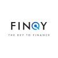

01 · ExperienceWhere I've built
Data Scientist Customer Acquisition
Ask2AI · New York, NY
Feature Engineering
Causal Inference
Polars
- Corrected selection bias in the scoring model, by building a feature engineering and causal inference pipeline in Python and Polars that integrated 11 source systems into a unified 30 million customer dataset.
- Scored the rejected-applicant population at 0.86 held-out AUC, by training gradient-boosted models within a Double Machine Learning framework to correct the selection bias in approved-only training data.
- Expanded the approvable population by 15% at flat expected default, by handing corrected scores to credit policy.
Data Scientist Generative AI & Personalization
Julius Baer · New York, NY
Agentic LangGraph
LLM-as-a-Judge
RAG
- Replaced the analyst-and-copywriter handoff for client-facing investment documents, by engineering an agentic LangGraph system retrieving client holdings, stated preferences, and live market news into a single generated draft.
- Automated compliance review at 86% agreement with human reviewers, by building an LLM-as-a-judge critic that scored each draft against the firm's rubric and regenerated failures until they passed.
- Cut content selection time for relationship managers by 35%, by shipping the pipeline as a chat interface with human-in-the-loop revision, letting RMs iterate on a living client document.
- Surfaced a 25% engagement lift, using exploratory analysis on customer data in Python and SQL against matched controls.
Data Scientist Co-op Customer Acquisition
Ask2AI · New York, NY
Uplift Modeling
DiD
Mixed-Integer Optimization
- Improved cross-channel ROI attribution by 22% and identified optimal credit limit thresholds, by building uplift models and difference-in-differences designs that isolated incremental campaign impact from last-touch bias.
- Lifted customer LTV 12% and cut churn 25%, by pairing uplift modeling with mixed-integer optimization to reallocate acquisition budget across channels.
Data Scientist Capstone Customer Analytics & Segmentation
TD Bank · New York, NY
Customer Analytics
Fraud Detection
XGBoost
- Raised fraud model precision-recall AUC from 0.20 to 0.67, by training XGBoost with SHAP on 100 million transactions.
- Validated fraud-detection strategy for senior leadership, by quantifying incremental catch rate against a holdout.
- Shaped segmentation and anti-money-laundering strategy, by clustering customers on transaction behavior and delivering automated reporting on the resulting risk tiers.

Teaching Assistant Algorithms to Data Science
Columbia University · New York, NY
Student Mentorship
Experiment Design
- Mentored 250+ MS students on ML algorithms, analytical reasoning, experiment design, and inference through structured weekly sessions.
- Designed case studies and assignments on A/B test design, modeling, and data-driven decision-making for applied data science coursework.
Earlier Experience & Internships
Data Scientist Consultant Predictive Maintenance & Operational Analytics
Navin Fluorine International Limited · Mumbai, IN
Predictive Maintenance
Operational Analytics
- Reduced equipment downtime by 35% and cut ingestion latency by 40% by architecting a predictive pipeline with XGBoost and Airflow.
- Lifted recall 15% and shortened repair cycles by deploying anomaly detection using XGBoost and Isolation Forest to surface high-risk events.

Founding IT Intern Acquisition & Retention Analytics
E-Revbay Pvt. Ltd. · Mumbai, IN
Acquisition Analytics
Retention Analytics
- Increased qualified customer leads by 50% per quarter by leading acquisition analytics pipelines using Equifax data, SQL, and Python.
- Eliminated 25% of manager intervention time and accelerated response by building real-time dashboards and root-cause pipelines in Tableau.
Artificial Intelligence Intern
Verzeo · Remote
Data Preprocessing
Computer Vision
CNN
- Processed tabular diamond datasets for classification, improving model accuracy by 17% through data cleaning and feature engineering.
- Built flower image recognition with CNN techniques, achieving 85% accuracy while reducing error rates by 15%.